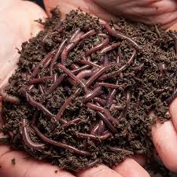

Minhocultura
Um projeto escolar sobre a criação de minhocas e seus benefícios.
O Que é Minhocultura?
Minhocultura é a atividade de criar minhocas em um ambiente controlado. O objetivo principal é aproveitar as capacidades das minhocas para transformar matéria orgânica em húmus, um fertilizante natural muito rico.
Essa prática é importante não só para a produção de um excelente adubo, mas também para ajudar na reciclagem de resíduos orgânicos.
A Importância da Minhocultura
- Produção de Húmus: Um fertilizante natural que melhora a qualidade do solo e o crescimento das plantas.
- Reciclagem de Lixo Orgânico: Ajuda a reduzir a quantidade de resíduos que vão para os aterros sanitários.
- Sustentabilidade: Uma prática ecológica que contribui para um meio ambiente mais saudável.
- Educação Ambiental: Permite aprender sobre ciclos naturais e a importância da reciclagem.
Tipos de Minhocas para a Minhocultura
Existem diferentes tipos de minhocas que podem ser criadas. Algumas das mais comuns são:
- Eisenia fetida (Vermelha da Califórnia): Muito utilizada por ser rápida na decomposição de matéria orgânica.
- Eisenia andrei (Vermelha Tigrada): Similar à Vermelha da Califórnia e também eficiente.
- Eudrilus eugeniae (Africana): Cresce bem em temperaturas mais quentes e produz bom húmus.
A escolha do tipo de minhoca pode depender do clima e do que você pretende produzir.
Contato
Para mais informações ou dúvidas sobre este trabalho, entre em contato: